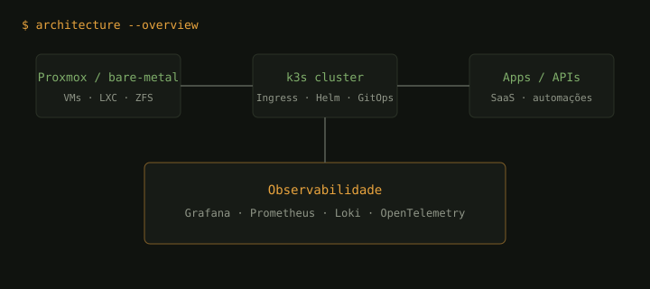

A IRN Devs cria software, integra sistemas e transforma dados em decisão — com automações que reduzem trabalho manual e produtos que já rodam em produção.
Separados por status real de deploy — não é portfólio de maquete, é o que está de pé agora.
Números ilustrativos com base em entregas típicas — substitua pelos seus cases reais com autorização.
Referências de formato. Substitua por depoimentos reais com autorização.
Projeto similar? fale com a IRN Devs →
Do bare-metal à observabilidade — o mesmo modelo usado nos projetos.

Mini-produtos deployados na Vercel, sem backend na maioria — direto no navegador.
| sistemas & redes | Linux, SSH hardening, Cloudflare Tunnels, acesso seguro, UFW, Fail2ban |
| virtualização | Docker, LXC, Docker, Kubernetes (k3s) |
| desenvolvimento | TypeScript, Node, Python, React/Vite, APIs |
| automações | Integrações, bots, filas, IA aplicada, webhooks |
| dados | ETL leve, SQL, dashboards, métricas de produto |
| ci/cd | Gitea Actions, GitHub Actions, Bash, Python |
| dados | PostgreSQL, MySQL, MongoDB, ETL/Pandas |
| cloud | AWS (VPC, EC2, S3, IAM), FastAPI |
Abertos a novos projetos em desenvolvimento, automações e análises de dados.